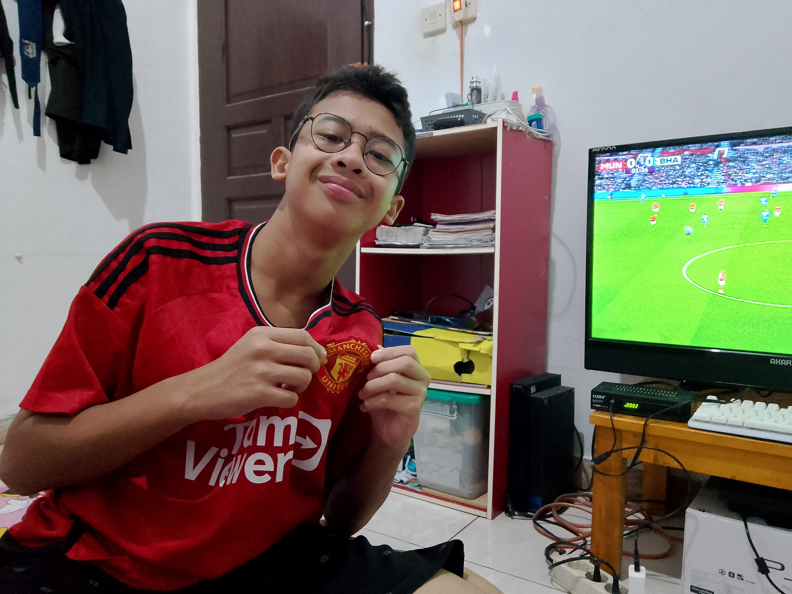

Alasan 1 — Sejarah, Tradisi, dan Kejayaan yang Melekat

Manchester United bukan sekadar klub sepakbola: ia adalah institusi. Sejak didirikan akhir abad ke-19 (sebagai Newton Heath) hingga menjadi raksasa dunia, MU punya jejak sejarah yang panjang—dari kemenangan domestik sampai momen-momen dramatis yang membentuk identitas klub. Stadion legendaris Old Trafford sering disebut "Theatre of Dreams" — tempat lahir banyak kenangan tak terlupakan bagi para suporter.
Menjadi fans MU berarti ikut merasakan kurun sejarah panjang itu: kebangkitan setelah masa sulit, penghormatan untuk yang gugur (seperti tragedi Munich 1958), dan momen-momen puncak seperti satu-satunya treble di era modern (1998–99). Tradisi klub, warna merah yang ikonik, dan lambang yang mudah dikenali membuat identitas ini kuat di seluruh dunia. Jika Anda menghargai cerita panjang, lapisan emosi, dan kontinuitas dalam sebuah klub — MU menyediakan semuanya.
Sumber inspirasi dan gambar: arsip publik foto stadion dan dokumentasi sejarah klub.
Sejarah yang kaya: bukan hanya gelar
Selain koleksi piala, cerita-cerita manusia di balik klub membuatnya hidup. Dari pekerja rel kereta yang membentuk tim awal hingga generasi pemain akademi yang meledak menjadi bintang dunia — kisah itu membawa kedekatan emosional antara klub dan fans. Saat Anda menjadi suporter MU, Anda tidak hanya mendukung satu tim; Anda ikut menjaga warisan yang terus berkembang.
Koneksi antar-generasi
Banyak keluarga meneruskan kecintaan pada MU dari orang tua ke anak; nyanyian stadion, ritual menonton, dan kenang-kenangan menjadi bagian dari budaya keluarga. Kenangan-kenangan ini memperkuat alasan emosional kenapa banyak orang tetap setia meskipun mengalami pasang surut performa tim.
Lanjut ke Alasan 2 →
Alasan 2 — Legenda, Manajer Legendaris, dan Mentalitas Juara

Tidak banyak klub yang punya figur manajerial seikonik Sir Alex Ferguson — orang yang memimpin era keemasan Manchester United dengan koleksi trofi luar biasa. Di bawah Ferguson, MU memenangkan ratusan pertandingan penting dan puluhan gelar; mentalitas pemenang yang dia tanamkan hingga hari ini masih menjadi rujukan bagi suporter dan pemain.
Pemain-pemain legendaris seperti Ryan Giggs, Paul Scholes, Eric Cantona, Cristiano Ronaldo, Wayne Rooney, dan banyak lagi memberi wajah pada identitas klub. Mereka bukan hanya pemain hebat — mereka menjadi simbol nilai seperti kerja keras, kreativitas, dan kebanggaan klub.
Manajer yang mengubah budaya
Ferguson dan manajer-manajer legendaris lainnya membentuk filosofi klub: mengejar kemenangan sampai detik terakhir, membangun talenta dari akademi, dan beradaptasi dengan perubahan zaman. Tradisi melahirkan bintang baru dari akademi (Class of '92 adalah contoh paling terkenal) membuat fans merasa klub selalu punya masa depan.
Pemain yang jadi ikon
Papan sejarah MU dipenuhi nama-nama yang menghasilkan momen ikonik—gol penentu, comeback dramatis, dan momen personal yang susah dilupakan. Fans MU tumbuh dengan cerita-cerita itu, membuat identitas kolektif yang kuat.
Lanjut ke Alasan 3 →
Alasan 3 — Komunitas Global, Amal, dan Pengaruh Sosial

Manchester United memiliki basis suporter global yang sangat besar. Dari klub resmi sampai komunitas penggemar di pelosok dunia, dukungan itu menciptakan jaringan sosial yang hangat: forum diskusi, nobar (nonton bareng), dan kegiatan komunitas lain. Menjadi bagian dari komunitas besar memberi Anda teman baru yang punya satu kesamaan kuat: cinta pada tim merah.
Lebih dari itu, klub juga aktif lewat Manchester United Foundation — inisiatif sosial yang menggunakan sepakbola untuk mendukung pendidikan, kesehatan, dan peluang bagi anak-anak serta komunitas yang kurang beruntung. Bagi banyak fans, mengetahui bahwa klub ikut berkontribusi kepada masyarakat menambah kebanggaan menjadi pendukungnya.
Rasa persatuan dan identitas
Suporter MU sering merasakan ikatan yang melampaui batas negara: nyanyian sama, warna sama, kenangan yang serupa — semua itu menyatukan orang-orang dari latar belakang berbeda. Komunitas seperti ini memberi Anda rasa memiliki dan tempat di mana emosi sepakbola bisa dirayakan bersama.
Peran sosial klub
Melalui yayasan dan proyek-proyek sosial, MU berupaya memberikan dampak positif di komunitas lokal maupun global. Bagi fans yang peduli soal nilai lebih dari sekadar pertandingan, inisiatif-inisiatif ini memperkuat alasan untuk mendukung klub secara moral dan praktis.
Kembali ke Alasan 1 ←